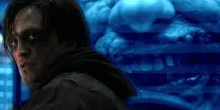

Tribute to T'Challa
T'Challa portrayed by Chadwick Boseman in the Marvel Cinematic Universe (MCU) media franchise—based on the Marvel Comics character of the same name—commonly known by his appointed title of Black Panther. He is depicted as the king of the African nation of Wakanda. He initially came into conflict with some of the Avengers but later allies with them against Thanos.
Boseman succumbed to colon cancer in 2020, however the Black Panther is said to live on in Black Panther:Wakanda Forver with a tribute to the late star
The dreams of yesterday are the hopes of today and the reality of tomorrow. Science has not yet mastered prophecy. We predict too much for the next year and yet far too little for the next ten.
Return of The Joker?
The Batman teased a return of the Joker in its sequel, and already actor Barry Keoghan has something interesting in mind for DC’s infamous villain.
Actors like Jack Nicholson, Heath Ledger, and Joaquin Phoenix are challenging acts to follow, but The Batman 2 could provide the opportunity to make Keoghan's Joker unique. After several movies playing the Joker opposite Batman, it’d be a unique and refreshing take for the Joker to be working with him. The Batman’s deleted Joker scene already established him in a role reflective of Hannibal Lecter as he helped Batman to understand the Riddler’s motives. The Batman 2 should continue to build on that odd dynamic and complex relationship, with the Joker’s twisted insight becoming a necessary evil to understand Batman’s other rogues. Then as the tensions rise, the stakes are raised, and it becomes clear why Robert Pattinson’s Batman doesn’t want to risk the Joker’s escape; it delivers on his worst nightmare in a future adaptation of Arkham Asylum: A Serious House on Serious Earth.